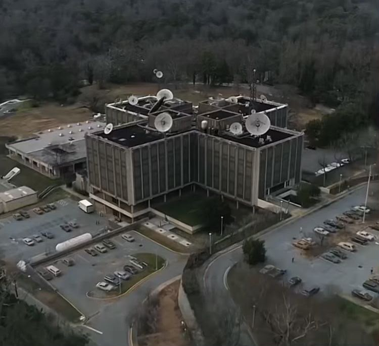
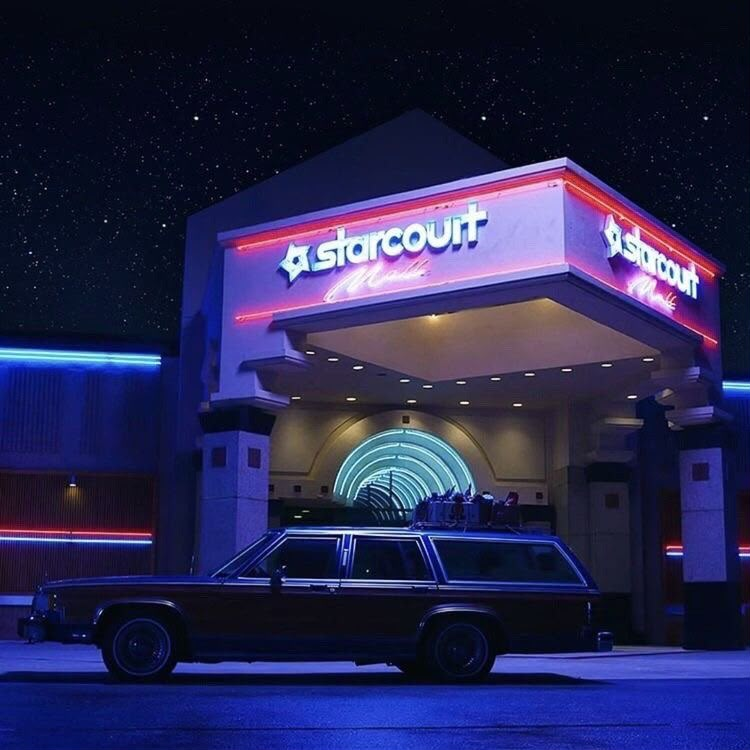
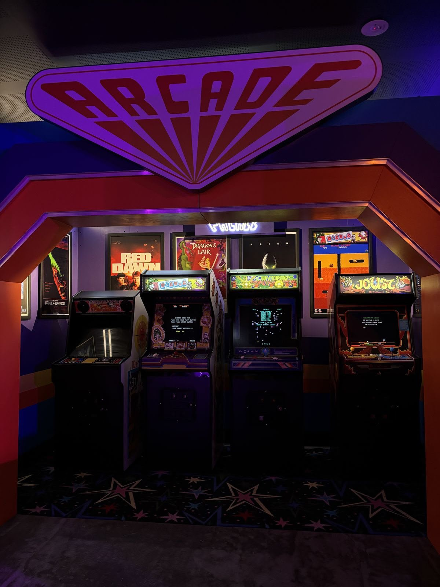
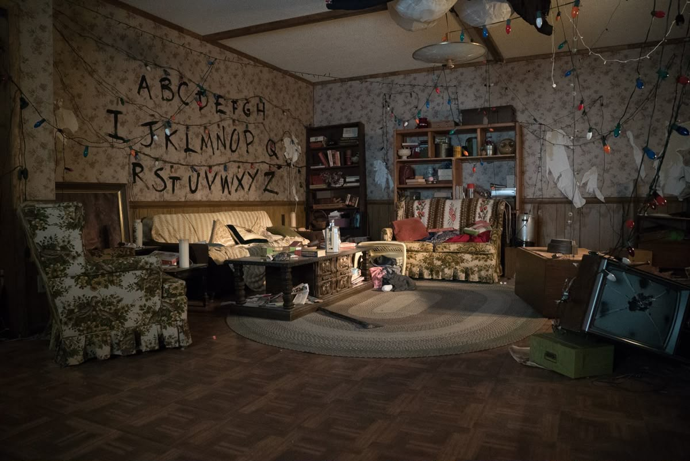

Hawkins, Indiana. Noviembre de 1983.
Stranger Things
Una serie, dos mundos
Stranger Things es una serie de ciencia ficción y terror creada por los hermanos Duffer y estrenada en Netflix en 2016. Sigue a un grupo de amigos que descubre experimentos secretos, fuerzas sobrenaturales y a una niña con poderes extraordinarios.
- Estreno: 2016
- 5 temporadas
- Creadores: Matt y Ross Duffer

Galería de Hawkins



